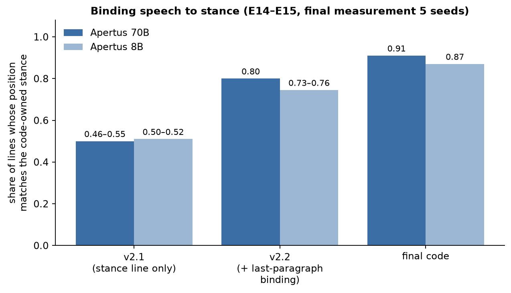
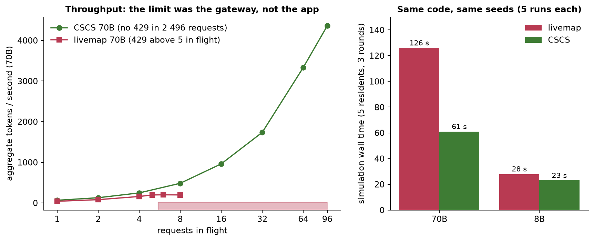
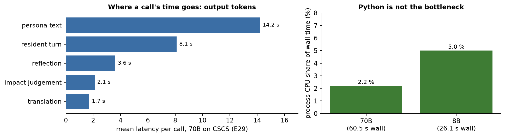

Fig. 1. End to end. Blue: Apertus voices. Green: code owns. Red: code checks the model. Beige: user and screen.
Fig. 1. End to end. Blue: Apertus voices. Green: code owns. Red: code checks the model. Beige: user and screen.Problem. Swiss voters decide on written text, and the text can be wrong or misread. In 2019 the Federal Supreme Court annulled the 2016 Heiratsstrafe vote because the booklet said about 80,000 couples were affected when 454,000 were; a 2023 parliamentary audit found the booklet's four-eyes check is not always done by people with the right expertise; 43 % of 1,513 respondents could not say what the November 2018 vote was about (VOTO). In many of the 2,110 municipalities the assembly sees 4–8 % of eligible voters, so the written proposal is what most people read. We found no actor that pre-tests the wording of an official text with simulated readers before it is published (the closest: Singapore GovTech's Echo for government announcements, and UZH stance detection on booklets after publication). Evidence and sources: docs/PITCH-LANDSCAPE.md.
What we built. GemeindeSim reads a vote text in German and French, spawns a fictional town of up to 25 residents who talk, move, change mood and form a stance on a pixel-art map, and writes a closing report on who is affected and why – never how to vote. It is a what-if and pre-test tool, not a vote predictor. We also used the town as a test bench for Apertus 1.5 (8B and 70B, two endpoints): more than 20,000 logged calls and trials in 91 logs, 32 experiment scripts, 48 instrumented simulations.
What we found. Apertus is an excellent speaker (112/112 resident lines in the right language; it abstains when a premise is missing; no voting advice in 30 tests) and an unreliable decider: asked for a stance, all 15 residents said yes, even with no persona; on 54 real Swiss federal votes the simulated electorate was 34–37 points too favourable and the 8B followed an official recommendation 98 % of the time; both sizes defined Steuerfuss wrongly and failed a one-step percentage. The design follows: the model voices; the application owns the stance, the arithmetic and the sources. Effect (same seeds): valid citations 0/159 → 100 %, reports asserting an outcome 12/30 → 0/30, residents whose words match their stance ≈0.5 → ≈0.9, a town that starts with real disagreement. On a real 48-page Federal Council booklet the pipeline answered 12/14 questions correctly and abstained on every unanswerable one.
Fig. 1. End to end. Blue: Apertus voices. Green: code owns. Red: code checks the model. Beige: user and screen.Stack. Two Docker services: a FastAPI + LangGraph backend (src/backend: graph/builder.py standard and builder_swarm.py two-phase graphs; graph/corpus.py sentence chunking, BM25 with per-chunk language and the ballot question pinned, optional dense hybrid; graph/llm.py async client, adaptive limiter and streaming; graph/chat.py grounded 1:1 chat; graph/metrics.py token accounting; services/economic_report.py; routers/simulate.py Socket.IO stream, routers/ensemble.py multi-seed spread) and a Next.js + Phaser frontend (map, event feed with citation chips, stance poll, influence graph, report, run-metrics panel, replay recorder/loader). The corpus is a read-only volume; the only outbound call is the OpenAI-compatible LLM_BASE_URL. No personal data is used: residents are generated at run time (code draws name, role, income band, leaning, language; the model writes the persona text).
| Call | Model | Mode | Measured notes |
|---|---|---|---|
| policy parse, persona, pro/con arguments, resident turns, impact judgement, report | 70B (8B supported) | json_object, thinking off, one language per completion | an instruction-placeholder example in the resident's language: 49/49 first-attempt valid, 0 % parroting (a filled example is parroted: 8B 53 %); strict json_schema breaks the 8B |
| DE↔FR translation of lines; grounded 1:1 chat | same | separate call; chat streamed per sentence | fluent (read); chat declines unknown facts 5/5, no vote advice 0/5 |
| retrieval, numbers, stance, dynamics | none | Python | no tool calls: parallel calls fail 11/11; thinking + JSON silently skips reasoning |
Deployability. Primary (c) Swiss-hosted endpoint: the CSCS inference API (used for judging) or the hackathon gateway; one build, three variables (LLM_NAME, LLM_BASE_URL, LLM_API_KEY); model ids are mapped between the two endpoints' styles and concurrency adapts (LLM_CONCURRENCY=auto). (a) On-premise / (b) air-gapped: point LLM_BASE_URL at any OpenAI-compatible server hosting open weights, e.g. vllm serve swiss-ai/Apertus-v1.5-8B --port 8001 on a GPU host and LLM_BASE_URL=http://host.docker.internal:8001/v1, LLM_NAME=swiss-ai/Apertus-v1.5-8B; the 8B was about 4× faster per simulation than the 70B. Honest status: all behaviours were measured on two hosted endpoints; no GPU was available, so no local run was measured (research/probe_endpoint.py runs the same capability table against any endpoint).
 Fig. 2. Stance is computed in code (weights are assumptions, not calibrated).
Fig. 2. Stance is computed in code (weights are assumptions, not calibrated).research/exp*.py, raw logs in research/results/)| ID | Question | Setup | Result |
|---|---|---|---|
| E0 | Is the offline test suite really offline, and how long does it take? | pytest, 69 tests, two runs, --durations | 69 passed; first run 420 s, second 50 s. One test (test_e2e.py::test_full_pipeline, 45 s) calls the live gateway, so the suite is not offline. |
| E1 | Do the PROBE-AND-PLAN claims on tool calls, thinking and determinism replicate? | 70B and 8B; n = 11 (3 at T=0, 8 at T=0.7); thinking n = 8 | Parallel tool calls fail 11/11 on both models. Thinking + json_object gives wrong 0.10 (no span, 16/16). T=0 not deterministic: 70B 3, 8B 5 distinct outputs of 5. |
| E2/E2b | Which example and format conditions make resident JSON valid and diverse? | 49 logged resident prompts, 70B and 8B, 4 conditions; first run void (429s) | response_format hypothesis refuted (strict JSON 100% without it). Filled example: 2 events/turn but 8B parrots 0.53. Instruction placeholders: 8B 1.0 to 1.8 events/turn, parroting 0. |
| E3 (baseline, E3a-E3d) | How does the shipped pipeline behave, and did the v2 fixes help? | Linden DE+FR, 5 residents, 3 rounds, T=0; 70B n = 3 / 5, 8B n = 2 / 5 | Baseline: 0/159 cited ids valid; 2/3 70B reports asserted a pass. Final: ids 1.00, 0/5 asserted, wall 126 s vs 334 s (unexplained). C1 corrected baseline self-intro to 0.27. |
| E4 | Does the opinion update polarise residents with no conversation? | 25 residents, 15 rounds, zero chats, 20 seeds, per controversy level | Confirmed: mean abs leaning 0.506 to 0.686 (medium) and 0.723 (high); 35.4% and 38.6% end above 0.9; low unchanged. v2: drift only for residents who conversed. |
| E5 | What does retrieval actually hand the resident? | 15 resident prompts of base70_s1; offline parse; six key facts | The vote question (118 to 124 %) reached only 4/15 prompts; other key facts 14-15/15. Language filter a no-op (all 9 chunks tagged de); chunks cut mid-word; corpus about 1.6k characters. |
| E6 | Does the numeral-grounding gate handle edge cases? | 12 hand-built cases against the Linden corpus, offline | Correct on only 8/12: flags correct derived arithmetic; hallucinated '2 Millionen CHF' and '4 Franken' pass via list numbers; spelled-out numbers missed. After v2: 10/12. |
| E7 | How good is Swiss civic knowledge and Swiss orthography? | 15 questions, 70B and 8B, regex rubric; ß test 3 samples x 4 prompts | 70B 12/15, 8B 9/15. Both define Steuerfuss wrongly and fail 4 000 CHF x 6 % (70B 280, 8B 360; correct 240). ß per 1 000 characters: 70B 2.6, 8B 1.2. |
| E8 | Does a silicon electorate predict real Swiss federal votes? | 54 votes 2021-2026, ballot title only, 70B and 8B, 3 672 calls | No: yes-bias +34 to +37 pp (70B, DE). Spearman 0.25 / 0.38 (70B), -0.02 / 0.02 (8B); Federal Council position alone 0.63; recalibrated MAE 12.4 pp vs 14.1 constant. |
| E9/E9b | Does the report assert invented outcomes or give vote advice? | 70B, logged report prompt, 6 objectives x 5 samples = 30; replay with v2 template | Vote advice 0/30. Baseline asserted an invented outcome in 12/30 (lower bound; 4/5 for default and 'did it pass?'). v2 template: 0/30 asserted, German 30/30. |
| E10 | What is the gateway's real parallel-request limit and throughput? | Raw requests, no retries, idle key, 1-8 in flight, both models | Effective limit is 4, not 5: at 5 in flight only 4/10 succeeded. 70B 156 tok/s at 4 in flight, 8B 555; app default 6 was too high. |
| E11/E11b/E11c | Do personas differentiate stance, and does a balanced corpus fix unanimity? | 15 residents from 70B baseline runs; T=0 and T=0.7; persona ablations; balanced corpus | Negative: 15/0/0 yes with full persona, role-only and no persona. Balanced corpus 14/0/0 (+1 failed call), T=0.7 27 yes, 2 no. Impact judged benefit for 14/15. |
| E12 | Does long-context needle recall hold up to about 105k tokens? | 70B and 8B, DE and FR, 5 lengths x 3 depths = 60 calls | 60/60 correct. 70B 31-36 s per call at about 100k tokens, 8B 8-9 s. Single easy needle only; persona dilution untested. |
| E13/E13b | Does the LLM agree with the code-owned stance? | 15 residents (v2.1), then 25 residents (final); re-asked with own memories | Agreement 0.40 in v2.1 (code no 4, LLM no 1); 0.64 in final. 7 of 10 code-against residents turn undecided or yes. |
| E14/E14b | Does resident dialogue tilt toward yes, and match the code stance? | 238 utterances (E14), 465 lines (E14b); two LLM classifiers, 70B and 8B | No yes tilt: v2.1 70B dialogue 0.54-0.61 against vs 0.09-0.16 for. Held-for residents sounded for 17-42%. Final speech match 0.91 / 0.88 (70B standard). |
| E15/E15b | Can speech be bound to the code stance, and does prompt position matter? | Replay of 75 prompts, 3 conditions (E15); in-loop 3 x 70B, 2 x 8B (E15b) | Reminder as last paragraph best (0.84 / 0.85, 70B). In loop: 70B 0.46-0.55 to 0.80, 8B 0.50-0.52 to 0.73-0.76. Undecided did not improve (70B 0.53 to 0.58). |
| E16/E16b | Can an undecided resident sound undecided? | Replay of 41 undecided prompts, 70B and 8B; U0-U3, then U1p, U1h | U1 raised mixed 0.47 to 0.72 but copied arguments verbatim 62-67%. U1p: 70B mixed 0.74 / 0.72, copying 0.05; 8B mixed+neutral 0.53 to 0.68. Opening phrase and hints failed. |
| E17 | Does the pipeline work on a real federal booklet? | 28 Sept 2025 booklet, 83k characters, 209 chunks, 14 questions, 70B, hand-graded | recall@4 10/14 (v1) vs 11/14 (v2, not significant); QA correct 11/14 and 12/14; unanswerable 3/3 abstained. Retrieval is the bottleneck; French untested. |
| E18/E18b | Does a clean clone build and run through the real UI? | Fresh clone, docker compose up, repo's Playwright script against UI and API | Failed at first: frontend image build error (lockfile without Linux packages), type error, concurrency default 6, swarm default, POST /simulate HTTP 422 (4 000-character cap). All fixed. |
| E19 | Can the harness compare what-if conditions such as a council recommendation? | 8B, 4 conditions x 3 paired seeds = 12 runs, standard graph | Yes or No recommendation shifts stance small and inconsistently (ranges include zero). Balanced corpus lowers stance in all 3 seeds (paired end -0.28). n = 3, 8B only. |
| E20 | Which models and capabilities does CSCS offer compared with livemap? | n = 5 per cell (3 for probes); four Apertus models; livemap same day | Key reaches only four Apertus v1.5 models (others 403); no embedding model. Same tool and thinking limits; only 8B-thinking fills the reasoning field. json_schema, seed, logprobs work on livemap too. |
| E21 | Does CSCS have a rate limit, and what throughput does it give? | 1-96 in flight, short and 2 400-token prompts, 250 tokens out, no retries | 0 non-200 in 2 496 requests; 70B 66 to 4 359 tok/s at 96 in flight. Livemap ceiling 5 in flight. Long jobs gave HTTP 504, notably on 8B-thinking. |
| E22 | Does long context work up to 233k tokens on CSCS? | 80 calls, DE and FR haystacks, 48k-233k tokens, single and three-fact questions | Single needle: 8B 30/30, 70B 26/30 (DE 11/15, digit corruption). Three facts: 70B 9/10, 8B 5/10. Livemap control n = 1 per cell, 2-3x slower. |
| E23 | Is temperature 0 reproducible, and does strict json_schema work on real prompts? | 24 resident prompts x 3 repeats, T=0, both endpoints and sizes | Not reproducible: 2.5-2.75 distinct outputs of 3; seed no effect. json_schema on CSCS 8B valid only 11/24 (endless whitespace), 70B 23/24, livemap 24/24; shipped json_object 72/72. |
| E24 | Is the yes-bias a property of the weights or of the deployment? | 15 residents, Linden vote, T=0, four CSCS models, logprob view | Bias persists: 14 yes / 1 no with persona, 15 yes without, on 70B, 8B, 70B-thinking. 8B-thinking had unparsed answers (6 of 30 hit token limit). 70B P(yes) 0.93. |
| E25 | Does the grounded 1:1 chat answer correctly without vote advice? | 5 residents x 5 scripted questions, 25 answers per run, backend on CSCS, 3 iterations | Run 1: 8 flagged figures, undecided residents repeated their position. Final: 0 errors, 0 invented figures, unknown fact declined 5/5, 0/5 vote recommendations, fact cited 5/5. |
| E26 | Is stuffing the whole booklet better than retrieval? | 83k-character booklet, 14+3 questions, 70B and 8B, top 4, top 8, whole; hand graded | 70B correct 11 (top 4), 12 (top 8), 13 (whole); 8B 11, 12, 12. Unanswerable 3/3 abstained; 94% of booklet tokens cached. Stuffing loses citation chips. |
| E27 | Do the v2 fixes replicate on CSCS with the final code? | 5 seeds x 2 sizes plus one 25-resident town; same code and seeds as livemap | 70B wall 61 s vs 126 s livemap; 8B 23 s vs 28 s. Cited ids 1.00. Speech match 0.85 / 0.87 (70B) vs 0.91 / 0.88. 25 residents: 105 s, 200 calls, 163 events. |
| E28 | Does the real booklet work through the whole app (PDF, simulation, chat)? | 48-page booklet via POST /context/sources, 5 residents, 2 rounds, 25 chat answers | 95 s, 0 errors. Retrieval alone: lost-revenue question 'not in the text' 5/5. Whole text in prompt: 5/5 answered 1.8 billion CHF, 0 invented figures, but only 2/5 carry a citation chip. |
| E29 | Is Python the bottleneck of the simulation? | One instrumented 5-resident, 3-round run per size on CSCS; micro-benchmarks | Process CPU 2.2% (70B, wall 60.5 s) and 5.0% (8B, wall 26.1 s). Output tokens explain 81% of mean latency. Booklet retrieval 12.1 ms to 2.5 ms after caching. |
| E30 | How does our retrieval compare with BM25, dense and hybrid baselines? | 14 gold questions, real booklet, 209 chunks of 480 characters, CPU fastembed | recall@4: BM25 as shipped 0.79, hybrid BM25 + e5-large 1.00, MiniLM dense 0.71 (worse than BM25). n = 14, one-question differences are noise. Option off by default. |
| E31 | Can one build run on both endpoints, and does the limiter adapt? | 25 residents x 2 rounds, both endpoints, LLM_CONCURRENCY=auto, 3 limiter iterations | Both id directions: 0 errors. Final limiter: CSCS 95-97 s, gateway 654 s (656 s at limit 4): more in flight added latency, not throughput. CSCS 6.7-7.3x faster. |
| E32 | Can we count tokens, show metrics and stream the chat safely? | 25 residents, 2 rounds on CSCS; 25 streamed chat answers | 143 calls, 168 k tokens in, 51 k out, 16% cached, p95 14.4 s, 0 retries. Chat first text 1.5 s (median), whole answer 2.4 s; quality unchanged. |
| Behaviour | Result |
|---|---|
| Parallel tool calls | fail in 11/11 trials per model, also with tool_choice="required"; the 70B writes the second call as text |
| Thinking vs JSON mode | with json_object no reasoning span (16/16); the 70B answers a trap puzzle wrongly in 15 tokens; thinking alone 6/8 (70B), 8/8 (8B) |
temperature 0 | 5 identical prompts → 3 (70B) and 5 (8B) distinct outputs; seed has no effect; the same on CSCS (2.7 distinct of 3) |
| Swiss facts, 15 questions | 70B 12/15, 8B 9/15 (CSCS 11/15, 9/15); both define Steuerfuss wrongly; 4,000 × 6 % → 280 (70B), 360 / 72 (8B), correct 240 |
| Language, 112 events | 100 % in the resident's language; the 70B writes ß at 2.6 per 1,000 characters (Swiss German has none: filtered in code) |
| Long context | needle recall 60/60 up to ≈105 k tokens (70B ≈36 s per call there); CSCS to the advertised 262 k |
 Fig. 3. The yes-bias: asked directly, every resident says yes.
Fig. 3. The yes-bias: asked directly, every resident says yes. Fig. 4. 54 real Swiss federal votes: bias and weak signal.
Fig. 4. 54 real Swiss federal votes: bias and weak signal.| Test | Result |
|---|---|
| Stance asked directly (15 residents) | 15/15 yes with full persona, role-only and no persona (E11); 14/15 with a balanced booklet; impact judged “benefit” for 14/15; on CSCS the 70B, 8B and 70B-thinking still say 14 yes / 1 no with a persona and 15 yes without (E24; the 8B-thinking model left answers unparsed) |
| 54 real federal votes, ballot title only (E8) | simulated yes-share 83 % (DE prompt) / 65 % (FR) vs real 46.5 %; Spearman with real yes-share 0.25–0.38 (70B with personas), ≈0 (8B); left-right self-placement removes the signal; the Federal Council position alone: 0.63, direction accuracy 0.75; replicated on CSCS within 0.01 |
| Authority cue | shown the recommendation, the 8B follows it on 98 % of votes (70B 83 %); German prompts 19 points more favourable than French |
| Left to itself at the end (E13) | the model agreed with the code stance for 40 % of residents and turned 3 of 4 opponents into “yes” → the stance stays in code |
Conclusion: a what-if explainer, not a vote predictor. It compares conditions (with/without an official recommendation, German vs French, a counter-argument added); it does not give absolute shares.
 Fig. 5. Before / after (3 baseline vs 5 final 70B runs).
Fig. 5. Before / after (3 baseline vs 5 final 70B runs).
Fig. 6. Speech binding: residents' words match the code stance.| Defect | Before | After |
|---|---|---|
| Cited source ids that exist | 0 / 159 | 100 % (16 runs) |
| Ballot question in the resident's prompt | 13–30 % | 100 % |
| Reports asserting “the measure passed” / mixing German and English | 12/30 / 5/5 runs | 0/30 / 0/16 runs |
| Chats opening with a self-introduction (70B) | 27 % | 0 % (metric corrected, C1) |
| Polarisation of a town where nobody talks (15 rounds) | |x| 0.51 → 0.69 | 0 (drift needs a conversation) |
| Numeral gate, 12 edge cases | 8/12 | 10/12 |
| Influence log reaching the UI | never (dropped by LangGraph) | 49–77 outcomes per group |
| Residents' words match their stance (70B / 8B) | 0.46–0.55 / 0.50–0.52 | 0.88–0.91 / 0.85–0.87 |
| Undecided residents sounding undecided (70B) | 0.47 | 0.74 (8B 0.53 → 0.68) |
make run on a clean checkout | failed (no Linux native packages in either lockfile) | builds; verified again from a fresh clone of the public repo on 13 Oct |
Real booklet and spread across seeds. On the 48-page Federal Council booklet of 28 Sept 2025 (83 k characters, 209 chunks, two measures) the retriever puts the gold evidence into four passages for 11/14 questions (old retriever 10/14); the 70B answered 12/14 correctly (hand-graded), abstained on 3/3 unanswerable questions and abstained wrongly only where the evidence was not retrieved: retrieval, not the model, is the bottleneck. Personas and the stance prior are drawn per seed and T=0 is not reproducible, so one run is not a result: across five 70B seeds the final share for ranges 0.00–0.80 (8B 0.00–0.40), and the poll did not change in 4 of 5 runs within three rounds. Compare-conditions (E19, 8B, three paired seeds): adding the referendum committee's counter-arguments lowers the mean stance in all three seeds (−0.28); a yes/no council recommendation does not move it consistently, because the stance never reads it.

Fig. 7. Same code, same seeds. The hackathon gateway answers 429 above 4–5 requests in flight; CSCS answered 2,496 requests up to 96 in flight without one.CSCS (E20–E28). Capability matrix, throughput, long context, determinism, structured output, stance on four models, retrieve-first vs whole-booklet, the final code on 5 seeds × 2 sizes, and the grounded chat live. All v2 fixes replicate (valid citations 1.00, no self-introductions, no asserted outcome, speech matches the code stance 0.85–0.88); so do the Swiss-knowledge and real-vote results. What does not change: the yes-bias (E24), one tool call, non-reproducible T=0. Complete booklet in the chat prompt (6,000–100,000 characters): the real revenue question 5/5 instead of 0/5 with retrieval alone. One build, both endpoints (E31): ids are mapped, and the limiter learned from three iterations (additive growth: 656 s on the busy gateway; slow start; a latency rule): 25 residents × 2 rounds took 89–97 s on CSCS, 654 s on the gateway that afternoon (more requests in flight added latency, not throughput there).

Fig. 8. Python is 2.2–5.0 % of the wall time; output tokens decide a call's latency (regression on 464 logged 70B calls: 0.6 s + 0.0172 s per output token + 0.85 s per 1 k uncached prompt tokens, R² 0.76).async; resident prompts use at most 1.1 % of the 262 k window, so no compaction is needed. 17–25 % of prompt tokens were cached on CSCS; moving the instruction block to the front would save ≈0.3 s of a 5.5 s call but moves the speech-binding paragraph (E15): not done.usage per run; a “Run metrics” panel and GET /metrics show tokens in/out/cached, latency p50/p95, context use, retries, endpoint, in-flight limit. Subagents / pagination: each resident is an isolated context run in parallel; no tool loop; every result set is a fixed small page.RAG against the usual baselines (E30; 14 gold questions, 209 chunks of the real booklet).
| retriever | recall@4 | recall@8 | MRR@10 | nDCG@10 |
|---|---|---|---|---|
| BM25 as shipped (ballot question pinned) | 0.79 | 0.86 | 0.29 | 0.47 |
| dense multilingual-e5-large | 1.00 | 1.00 | 0.89 | 0.90 |
| hybrid BM25 + e5-large (RRF, k = 60) | 1.00 | 1.00 | 0.91 | 0.93 |
| dense paraphrase-multilingual-MiniLM | 0.71 | 0.79 | 0.56 | 0.63 |
n = 14, one German document, one-question differences are noise. The hybrid is an option (EMBEDDING_MODEL), off by default: it needs a 2.2 GB local model, which an air-gapped deployment would have to ship.
docs/replays/) Fig. 9. 25 residents (13 DE, 12 FR), 5 rounds, Apertus 70B on CSCS, balanced Linden text, standard graph.
Fig. 9. 25 residents (13 DE, 12 FR), 5 rounds, Apertus 70B on CSCS, balanced Linden text, standard graph.316 calls, 416 k tokens in and 97 k out (25 % cached), mean latency 9.0 s, p95 24.6 s, 0 retries, 0 failures, 237 s wall (limiter 4 → 32). All 150 resident dialogue lines were grounded with 0 invalid citations; the household figures 144 and 432 CHF are the calculator's. The poll moved from 8 for / 10 against / 7 undecided to 10 / 9 / 6: opinions move a little, as in the five-seed study; the report names who is affected and ends with “no voting recommendation”. Three candidate runs were recorded (25×5 twice, 25×4); the one with the most mixed start was kept. The backend caps residents at 25.
 Fig. 10. The app: editor (paste, residents, rounds), a live run with the stance poll and the run-metrics panel (tokens, cache share, latency, in-flight limit, retries), and a grounded resident chat.
Fig. 10. The app: editor (paste, residents, rounds), a live run with the stance poll and the run-metrics panel (tokens, cache share, latency, in-flight limit, retries), and a grounded resident chat.| Date | What changed, and why |
|---|---|
| 5 Oct | Audit of the inherited code (one-call limits, citations 0/159, outcomes asserted); instrumented baseline (E3); probes E1–E12; the yes-bias (E11) and the failed fixes (E11b, E11c) → v2 design: code-owned stance, validated citations, numeral gate, speech binding (E14–E16), real booklet (E17), compare-conditions (E19); clean-clone build repaired (E18); a measurement error found and corrected (C1). |
| 6 Oct | Second endpoint, CSCS (E20–E28): capability matrix, throughput, 262 k context, determinism, stance on four models; chat wired and grounded; the final code on both endpoints. |
| 7 Oct | Mentor's engineering questions (E29–E32): Python overhead, retrieval baselines, one build on both endpoints with an adaptive limiter, token accounting and metrics panel, streaming chat. The judges use CSCS: defaults switched. |
| 8 Oct | Landscape and pitch (docs/PITCH.md, PITCH-LANDSCAPE.md: precedents, which LLMs were used elsewhere and why, Swiss evidence); the demo replay recorded from the running app; residents slider limit made to match the backend (25). |
| 13 Oct | Fresh clone of the public repo built with Docker. Recording the demo found a deployment bug: the image started two uvicorn workers, so a run's in-memory record and its Socket.IO session could land on different workers (about every other run failed with “Simulation not found”); fixed with one worker and verified. This report, footage, voice-over. |
docs/review/); we do not claim native review until corrections are applied.price_pressure indicator is always 0; the 8B never emits move; the backend caps residents at 25; the Linden sample is synthetic and short; real-booklet French edition untested.git clone https://github.com/hatif03/gemeindesim && cd gemeindesim && cp track_2b/.env.example track_2b/.env, put the key in LLM_API_KEY (defaults are the CSCS URL and swiss-ai/Apertus-v1.5-70B), then make run (without make: cd track_2b && docker compose up --build). UI: http://localhost:3000 (second port UI_ALT_PORT, default 8080; change it if taken). Click LOAD and pick track_2b/docs/replays/linden_25x5_cscs.replay.json to replay the recorded demo run without calling the model, or PLAY, paste the text from data/steuerfuss_linden_balanced_de.txt and _fr.txt, and run. Offline tests: cd track_2b/src/backend && uv run pytest --deselect tests/test_e2e.py (146 tests). Every experiment is a script in research/ with raw call logs in research/results/; docs/research/LAB-NOTEBOOK.md records every decision including failed attempts; docs/ENDPOINTS.md and docs/ENGINEERING-QA.md hold the endpoint and engineering details.
Run the probe and a simulation on a local vLLM (8B); apply the native-speaker corrections; statistics-based personas; calibrate the stance prior on municipal results; vote-specific dashboard indicators; a panel-question output so a human citizen panel (cf. Sion 2019) can check what the simulation flags.
CC-BY-4.0 (all Hack Apertus projects are open-sourced); code Apache-2.0. Park et al. 2022 (2208.04024), 2023 (2304.03442), 2024 (2411.10109); Peralta et al. 2022 (2201.01322); Chuang et al. 2024 (2311.09618); Ashokkumar et al., Nature 2026; Barmettler 2026 (2606.00048); von der Heyde et al. 2024 (2409.09045); Bisbee et al. 2024; Egli et al. 2023 (2306.08999); Singapore GovTech Echo 2026; Pew Research Center 30 Sept 2026; Swissvotes (Univ. Bern); Bundeskanzlei, Erläuterungen des Bundesrates, 28.09.2025; GPK-N report 21.11.2023; VOTO; Apertus technical report (2509.14233) and Charter.